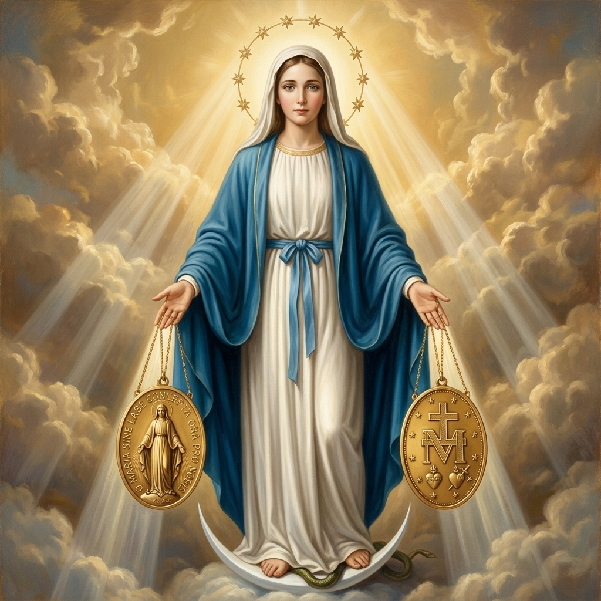

Empowering lay Catholics in San Mateo, California to glorify God through holiness, prayer, and active apostolic service under the banner of Mary Immaculate.

"The object of the Legion of Mary is the glorification of God through the holiness of its members by means of prayer and active co-operation, under ecclesiastical guidance, in Mary’s and the Church’s work."
The core combat forces of the Legion. Active members carry out weekly spiritual works, meeting in fellowship to report on their apostolic assignments and receive training.
The vital spiritual supply line. Auxiliary members sustain the active legionaries on the front lines by maintaining a daily prayer arsenal.
Active book lending and faith dialogues promoting Catholic literature and devotionals in the community.
Weekly visitations providing companionship, rosary recitation, and spiritual consolation to residents.
Visiting local families in their homes to offer prayers, introduce the parish, and share blessings.
Outreach and spiritual guidance to youth incarcerated in local juvenile facilities, bringing hope and Catholic materials.
Comforting individuals in their final hours, helping them prepare spiritually, and ensuring no soul passes away alone.
Patiently and charitably contacting lapsed Catholics, inviting them back to the sacraments despite rejection or indifference.
Teaching the truths of the faith to children, RCIA candidates, or adults preparing to receive the sacraments.
Assisting the impoverished, combining material aid with genuine companionship and spiritual care.
Walking with individuals struggling with addiction, homelessness, or extreme social isolation.
Supporting mothers facing crisis pregnancies and families coping with difficult or unstable circumstances.
Spending dedicated hours in prayerful, peaceful vigil outside abortion clinics to defend the unborn.
Distributing Catholic literature and engaging respectfully in faith-based dialogues in public squares.
Organizing and leading home enthronement ceremonies to consecrate families to the Sacred Heart of Jesus.
Visiting isolated care home residents who receive few or no visitors, bringing them friendship and hope.
In the Legion of Mary Handbook, heroism is not defined by extraordinary or dramatic deeds, but by the love, fidelity, and perseverance with which ordinary apostolic work is carried out. A work becomes heroic when it is performed with unwavering commitment and a generous spirit, even in the face of difficulty.
Heroic apostolic service is characterised by:
For example, faithfully visiting an elderly person each week for many years—even when there is little acknowledgment or appreciation—reflects the kind of heroic service the Handbook encourages. Such quiet, consistent acts of charity often require greater perseverance than a single extraordinary deed.
The Handbook reminds us that God does not primarily ask for spectacular achievements, but for steadfast fidelity. True heroism is found in a lifetime of humble, loving apostolic service offered generously and faithfully, one person at a time.
The Legion of Mary was founded in Dublin, Ireland, on September 7, 1921, by Frank Duff, a lay civil servant in the Department of Finance. Duff envisioned an organized lay apostolate where regular Catholics would engage in active spiritual works, working in cooperation with their parish priests to carry the Light of Christ into their communities.
Deliberately modeled after the structural discipline, loyalty, and esprit de corps of the ancient Roman Legion, the organization is structured as spiritual units. The base parish unit is called a praesidium (from the Latin for a military garrison or outpost), reporting upward through local Curiae, Comitia, and Senatus, all unified under the central global governing body—the Concilium Legionis Mariae—in Dublin, Ireland.
Throughout its history, the Legion has produced incredible envoys of faith, including Servant of God Frank Duff, Venerable Edel Quinn (who established hundreds of outposts in East Africa), and Servant of God Alfie Lambe (who brought the Legion across South America). Today, the Legion operates in approximately 170 countries, representing one of the largest lay apostolic movements in the Catholic Church.